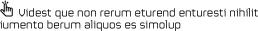
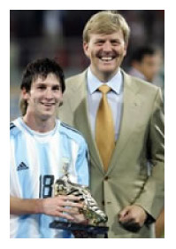

CAREER TIMELINE
Lionel Messi started playing football at a very early age in his
hometown's Newell's Old Boys. From the age of 11, he suffered from
a hormone deficiency and as Lionel's parents were unable to pay for
the treatment in Argentina, they decided to move to
Barcelona, Spain.
__________ _ _ _ _ _ _ _ _


1987
Messi is born in Rosario, Argentina on the 24th of
January. He is the third son of parents Jorge Horácio
Messi, a factory steel worker, and Celia María
Cuccittini, a part-time cleaner.
1992
At the age of five, Messi begins training with the youth
club of team Grandoli, which is coached by his father.
1995
He joins Newell's Old Boys Club, also based
in his hometown of Rosario.
 1998
At the age of 11, Messi is diagnosed with a growth
hormone deficiency. Messi's father manages to arrange
a trial for Barcelona, who immediately sign a contract,
reportedly on a napkin, and offered to pay for his
treatment on the condition that he and his father
move to Barcelona to begin training.
1998
At the age of 11, Messi is diagnosed with a growth
hormone deficiency. Messi's father manages to arrange
a trial for Barcelona, who immediately sign a contract,
reportedly on a napkin, and offered to pay for his
treatment on the condition that he and his father
move to Barcelona to begin training.
2000-2003
Messi plays in a range of Barcelona's youth and
secondary teams, showing his prowess on the field
on nearly every occasion, scoring record
amounts of goals. He makes his debut for the first team on
November 16, 2003 in a friendly against FC Porto.

2004
In June, he debuts for the Argentina under-20 team in a friendly
against Paraguay. He is awarded the Golden Ball and the Golden Shoe for best player
of the tournament, and scores two goals in the final against Nigeria.
On October 16th, Frank Rijkaard decides to feature Messi in a league game
against RCD Espanyol. He becomes the third-youngest player to ever play in
a competitive game for Barcelona, and at 17 years and 114 days, the youngest
to ever play in La Liga.
2005
Is part of the Argentinian team that wins the 2005
FIFA World Youth Championship in the Netherlands.
On August 17th he makes his full international debut
for Argentina in a match against Hungary. After being
sent off after just two minutes for a dubious refereeing
decision, he is found crying in the changing rooms.
2006
Messi establishes himself as a regular first team player
for Barcelona, scoring 14 times in 26 matches. In 2006
he becomes the youngest player to play for Argentina at
a World Cup, when he comes on as a substitute in
the 74th minute of a match against Serbia & Montenegro.
2007
Messi establishes the Leo Messi Foundation, a
charity supporting access to education and health
care for vulnerable children across the world.
2008
Messi helps Argentina power to the final of the
Beijing Olympics, in which he assists Di Maria's
goal that beats Nigeria in the gold medal match.
2009
On 28 March, in a World Cup Qualifier against Venezuela, Messi wears the
number 10 jersey for the first time for Argentina. Messi opens the scoreboard in
a match Argentina goes on to win 4-0. He signs a 250 million euro contract with
Barcelona, running until 2016.
On December 1, Messi wins the 2009 Ballon d'Or, beating runner-up Cristiano
Ronaldo by the largest ever margin of votes, with 473 to 233. He then scores the
winner in the final of the Club World Cup in Abu Dhabi, two days before being
named FIFA World Player of the Year on December 21st.
2010
On April 6, 2010 he scores four goals in a single match
for the first time in his career during Barcelona's 4-1
defeat of Arsenal in the Champions League. He is
named Man of the Match in Argentina's 2-0 victory over
Greece in the World Cup. He is also the first player to
receive the newly formed FIFA Ballon d'Or award.
2011
He continues his impressive performances in La Liga and the
Champions League, producing a particularly memorable display
in his team's 0-2 victory over arch rivals Real Madrid in a hotly
contested semi final first leg match on April 27. Barcelona go on to
win the competition and Messi again receives the FIFA Ballon d'Or.
2012
Despite Barcelona's failure to retain the Champions
League trophy this year, Messi finished the season with
an impressive record. He scored in the 2012 Copa del Rey
Final, helping Barcelona win their 26th Spanish Cup title,
and finished the season with an unsurpassed total of 73
goals in all competitions.